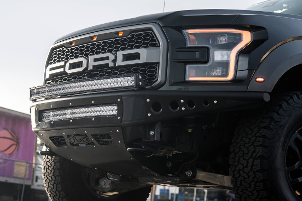

The F-150 Raptor is the new American badass and it’s also a 2017 10 Best winner. A 3.5 liter twin-turbo V6 makes 450 hp and 510 lb-ft; it pairs with a 10-speed automatic. Rated at 18 mpg highway, it’s more efficient than previous model if that matters to buyers. More important: It hits 60 mph in 5.1 seconds. Standard all-wheel drive, which features a locking center diff, can auto-shift to the rear wheels depending on drive mode. SuperCab and SuperCrew models are offered.
I am a Motor Sport enthusist, so I need a unique vehicle that is highly customizable, has a lot of power, great exhuast note, human comforts, and most of all fuctionality. This here 2017 ford raptor crosses about every requirment I need and then some!
This Mid-Section includes an X-pipe and S-Type mufflers for increased performance and our distinctive Borla sound.
Dual Inlet Large 5-Layer Performance Air Filters: This sealed intake system utilizes pre-oiled, large 7" tall radial flow performance air filters with 5-layers of progressive finer mesh cotton media providing maximum airflow and performance.
A light bar is a short or long array of high-luminosity LED lights. These supplement your vehicle’s stock headlamps. They provide a brighter, broader and penetrating beam of light ahead, behind or to the side. They provide a significant advantage for night driving or when illuminating trails, campsites or work areas.
The Stealth R front bumper was designed from the ground up for the new 2017 Ford Raptor while maintaining our flagship Stealth look that fans are familiar with. A vented skid plate and integrated scoop behind the skid maintains airflow to your intercooler while giving your Raptor better clearance and approach angle. Built from .120 wall steel tubing and 1/8" aluminum panels, the Stealth R for the new Ford Raptor is just as tough as our previous generation Raptor bumpers. Our universal light mount system was incorporated into the top hoop of the bumper to allow mounting up to 10 cube lights or a 40" radius LED bar. Mix and match any brand and size lights for multiple combinations to find the perfect lighting for your off-road needs.
To match the look and style of the Stealth R front bumper, accent the rear with our Stealth R rear bumper for the new Ford Raptor. Designed to maintain factory dual exhaust, tow hooks, and backup sensors the Stealth rear bumper is the perfect upgrade for the 2017 Ford Raptor. Built with .120 wall steel tubing the Stealth will give your new Raptor added protection while upgrading the visual aesthetic. With dual mounts for Dually lights the Stealth provides additional rear lighting for the 2017 Ford Raptor. Dimple died step plates on the top of the bumper provide a better surface for footwork.
Designed and tested specifically for track day enthusiasts and for drivers who demand the utmost performance from their cars, these kits offer superlative performance for both normal driving and demanding track day sessions.